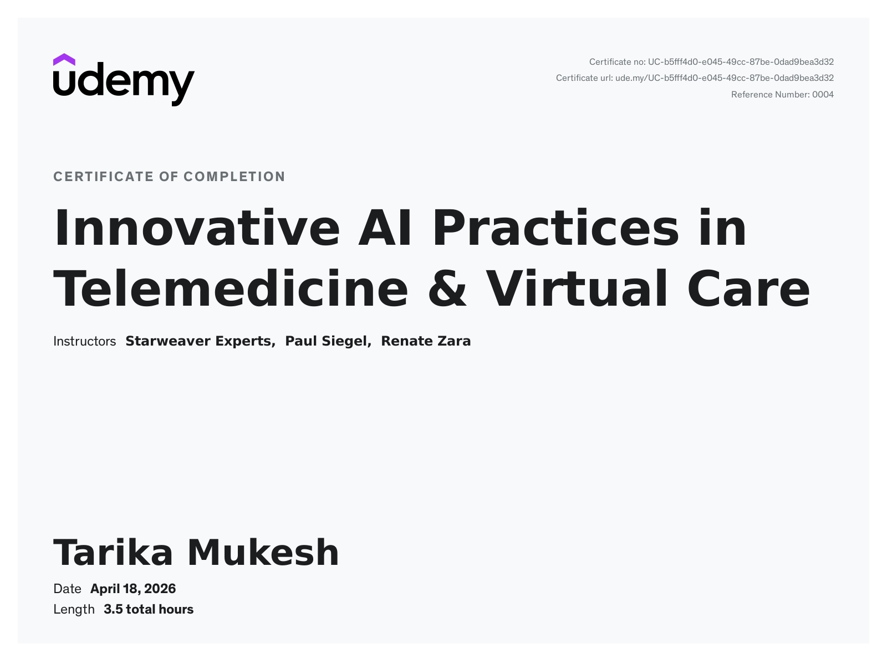
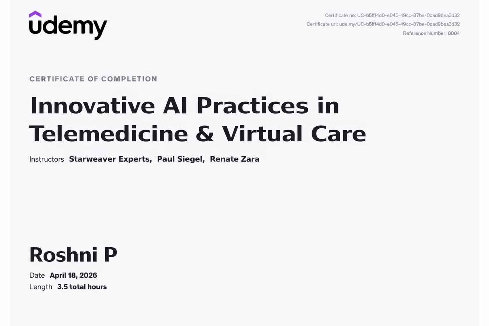

Biomedical Portfolio | M. Tarika | Roshni.P
Driven biomedical engineering students, we aim to explore the integration of artificial intelligence with healthcare systems. Our goal is to acquire knowledge, develop innovative solutions, and contribute towards advancing medical technology for better patient outcomes. Through this portfolio, we showcase our learning, projects, and passion for creating impactful biomedical innovations.
Through this course, we gained foundational and advanced knowledge in Artificial Intelligence and its applications in healthcare. The course enhanced our understanding of machine learning, deep learning, medical imaging, and real-world biomedical applications.
Introduction to AI.
data structre and search algorithms.
adverserial search problem and intelligent agent.
knowledge and reasoning.
machine learning and planning problem.


As part of this course, we completed various assignments and tasks including case studies, project-based learning, and practical applications of AI in biomedical systems. These activities helped us strengthen our analytical thinking, problem-solving skills, and understanding of real-world healthcare challenges.